import numpy as np
import matplotlib.pyplot as pltLab: Decision Trees
machine-learning
neural-networks
Practice lab implementing a decision tree from scratch, entropy, dataset splitting, information gain, and recursive building, to classify mushrooms as edible or poisonous.
This practice lab implements a decision tree from scratch and applies it to the task of classifying whether a mushroom is edible or poisonous. It is the graded counterpart to the from-scratch lab on the cat dataset, the same four functions get built, entropy, dataset splitting, information gain, and best-split selection, and then a tree gets grown recursively to a maximum depth of 2.
Problem Statement
Suppose you are starting a company that grows and sells wild mushrooms. Since not all mushrooms are edible, you would like to be able to tell whether a given mushroom is edible or poisonous based on its physical attributes, and you have some existing data to use for this task. Can the data help identify which mushrooms can be sold safely?
Warning
The dataset used here is for illustrative purposes only. It is not meant to be a guide on identifying edible mushrooms.
Dataset
The collected dataset has 10 examples with three features and the label.
| Mushroom | # | Cap Color | Stalk Shape | Solitary | Edible |
|---|---|---|---|---|---|
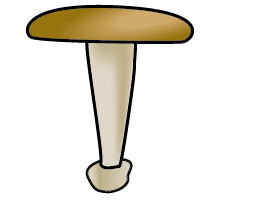 |
0 | Brown | Tapering | Yes | 1 |
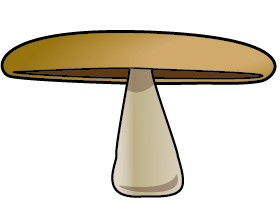 |
1 | Brown | Enlarging | Yes | 1 |
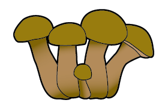 |
2 | Brown | Enlarging | No | 0 |
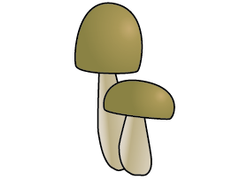 |
3 | Brown | Enlarging | No | 0 |
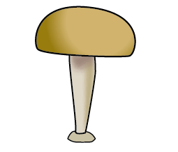 |
4 | Brown | Tapering | Yes | 1 |
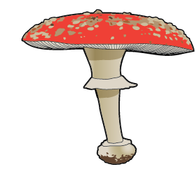 |
5 | Red | Tapering | Yes | 0 |
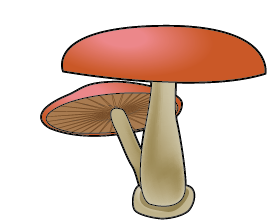 |
6 | Red | Enlarging | No | 0 |
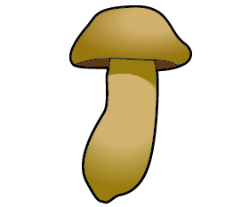 |
7 | Brown | Enlarging | Yes | 1 |
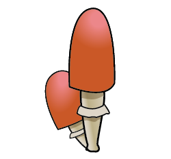 |
8 | Red | Tapering | No | 1 |
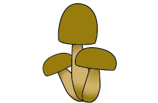 |
9 | Brown | Enlarging | No | 0 |
One-Hot Encoded Dataset
For ease of implementation, the features get one-hot encoded: Brown Cap (1 for brown, 0 for red), Tapering Stalk Shape (1 for tapering, 0 for enlarging), and Solitary (1 for yes, 0 for no). Since every original feature had exactly two values, each becomes a single 0/1 feature.
X_train = np.array([[1, 1, 1], [1, 0, 1], [1, 0, 0], [1, 0, 0], [1, 1, 1],
[0, 1, 1], [0, 0, 0], [1, 0, 1], [0, 1, 0], [1, 0, 0]])
y_train = np.array([1, 1, 0, 0, 1, 0, 0, 1, 1, 0])A good place to start with any dataset is to print out the variables and check their shapes.
print("First few elements of X_train:\n", X_train[:5])
print("Type of X_train:", type(X_train))
print("First few elements of y_train:", y_train[:5])
print("Type of y_train:", type(y_train))
print("The shape of X_train is:", X_train.shape)
print("The shape of y_train is: ", y_train.shape)
print("Number of training examples (m):", len(X_train))First few elements of X_train:
[[1 1 1]
[1 0 1]
[1 0 0]
[1 0 0]
[1 1 1]]
Type of X_train: <class 'numpy.ndarray'>
First few elements of y_train: [1 1 0 0 1]
Type of y_train: <class 'numpy.ndarray'>
The shape of X_train is: (10, 3)
The shape of y_train is: (10,)
Number of training examples (m): 10Decision Tree Refresher
Recall the steps for building a decision tree. Start with all examples at the root node, calculate the information gain for splitting on each possible feature and pick the highest, split the dataset according to the selected feature to create the left and right branches, and keep repeating until a stopping criterion is met. This lab implements the four functions that make one split happen, computing the entropy at a node, splitting the dataset at a node, computing the information gain of a split, and choosing the feature that maximizes it, then uses them to build the whole tree. The stopping criterion chosen here is a maximum depth of 2.
Exercise 1: Compute Entropy
The first function, compute_entropy, takes a numpy array y indicating whether each example at the node is edible (1) or poisonous (0), computes \(p_1\), the fraction of edible examples, and returns
\[ H(p_1) = -p_1 \log_2(p_1) - (1 - p_1)\log_2(1 - p_1) \]
with the usual conventions, the log is base 2, \(0\log_2(0)\) counts as 0 (so if \(p_1\) is 0 or 1 the entropy is 0), and an empty node also returns 0.
def compute_entropy(y):
"""
Computes the entropy at a node.
Args:
y (ndarray): Numpy array indicating whether each example at a node is
edible (1) or poisonous (0)
Returns:
entropy (float): Entropy at that node
"""
entropy = 0.
if len(y) != 0:
p1 = len(y[y == 1]) / len(y)
if p1 != 0 and p1 != 1:
entropy = -p1 * np.log2(p1) - (1 - p1) * np.log2(1 - p1)
else:
entropy = 0.
return entropy
# Compute entropy at the root node (i.e. with all examples)
# Since we have 5 edible and 5 non-edible mushrooms, the entropy should be 1
print("Entropy at root node: ", compute_entropy(y_train))Entropy at root node: 1.0Exercise 2: Split Dataset
Next, split_dataset takes the data at a node, the list of indices of the examples at that node, and a feature to split on, and returns the indices going to the left branch (feature value 1) and the right branch (feature value 0). For example, starting at the root (node_indices = [0, 1, ..., 9]) and splitting on feature 0, Brown Cap, the left branch should receive the brown-capped mushrooms [0, 1, 2, 3, 4, 7, 9] and the right branch the red-capped ones [5, 6, 8].
def split_dataset(X, node_indices, feature):
"""
Splits the data at the given node into left and right branches.
Args:
X (ndarray): Data matrix of shape (n_samples, n_features)
node_indices (list): List containing the active indices, the samples being considered at this step
feature (int): Index of feature to split on
Returns:
left_indices (list): Indices with feature value == 1
right_indices (list): Indices with feature value == 0
"""
left_indices = []
right_indices = []
for i in node_indices:
if X[i][feature] == 1:
left_indices.append(i)
else:
right_indices.append(i)
return left_indices, right_indicesCheck the implementation on two cases, the full root node, and a subset of it, splitting on feature 0 both times. (The dataset has three features, so the feature can be 0 for Brown Cap, 1 for Tapering Stalk Shape, or 2 for Solitary.)
# Case 1
root_indices = [0, 1, 2, 3, 4, 5, 6, 7, 8, 9]
feature = 0
left_indices, right_indices = split_dataset(X_train, root_indices, feature)
print("CASE 1:")
print("Left indices: ", left_indices)
print("Right indices: ", right_indices)
show_split(root_indices, left_indices, right_indices, feature)CASE 1:
Left indices: [0, 1, 2, 3, 4, 7, 9]
Right indices: [5, 6, 8]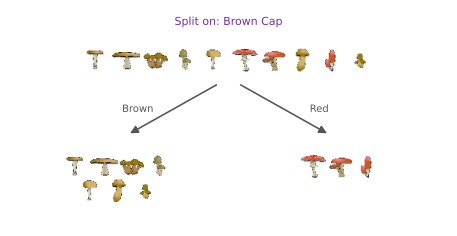
# Case 2
root_indices_subset = [0, 2, 4, 6, 8]
left_indices, right_indices = split_dataset(X_train, root_indices_subset, feature)
print("CASE 2:")
print("Left indices: ", left_indices)
print("Right indices: ", right_indices)
show_split(root_indices_subset, left_indices, right_indices, feature)CASE 2:
Left indices: [0, 2, 4]
Right indices: [6, 8]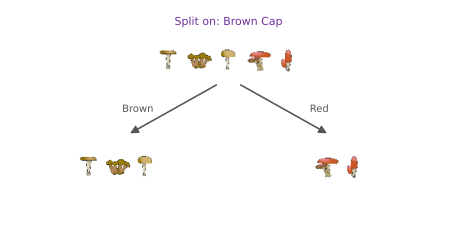
Exercise 3: Calculate Information Gain
Next, compute_information_gain takes the training data, the indices at a node, and a feature to split on, and returns
\[ \text{Information Gain} = H\!\left(p_1^\text{node}\right) - \left( w^{\text{left}} H\!\left(p_1^\text{left}\right) + w^{\text{right}} H\!\left(p_1^\text{right}\right) \right) \]
where \(H(p_1^\text{node})\) is the entropy at the node, \(H(p_1^\text{left})\) and \(H(p_1^\text{right})\) are the entropies of the two branches, and \(w^{\text{left}}\) and \(w^{\text{right}}\) are the proportions of the node’s examples in each branch. It reuses compute_entropy and split_dataset from above.
def compute_information_gain(X, y, node_indices, feature):
"""
Compute the information gain of splitting the node on a given feature.
Args:
X (ndarray): Data matrix of shape (n_samples, n_features)
y (array like): List or ndarray with n_samples containing the target variable
node_indices (ndarray): List containing the active indices, the samples being considered in this step
feature (int): Index of feature to split on
Returns:
information_gain (float): Information gain computed
"""
# Split dataset
left_indices, right_indices = split_dataset(X, node_indices, feature)
# Some useful variables
X_node, y_node = X[node_indices], y[node_indices]
X_left, y_left = X[left_indices], y[left_indices]
X_right, y_right = X[right_indices], y[right_indices]
node_entropy = compute_entropy(y_node)
left_entropy = compute_entropy(y_left)
right_entropy = compute_entropy(y_right)
w_left = len(X_left) / len(X_node)
w_right = len(X_right) / len(X_node)
weighted_entropy = w_left * left_entropy + w_right * right_entropy
information_gain = node_entropy - weighted_entropy
return information_gain
info_gain0 = compute_information_gain(X_train, y_train, root_indices, feature=0)
print("Information Gain from splitting the root on brown cap: ", info_gain0)
info_gain1 = compute_information_gain(X_train, y_train, root_indices, feature=1)
print("Information Gain from splitting the root on tapering stalk shape: ", info_gain1)
info_gain2 = compute_information_gain(X_train, y_train, root_indices, feature=2)
print("Information Gain from splitting the root on solitary: ", info_gain2)Information Gain from splitting the root on brown cap: 0.034851554559677034
Information Gain from splitting the root on tapering stalk shape: 0.12451124978365313
Information Gain from splitting the root on solitary: 0.2780719051126377Splitting on Solitary (feature 2) at the root node gives the maximum information gain, so it is the best feature to split on there.
Exercise 4: Get Best Split
The last function, get_best_split, wraps it up. Iterate through the features, compute the information gain of each with compute_information_gain, and return the feature that gives the maximum.
def get_best_split(X, y, node_indices):
"""
Returns the optimal feature to split the node data.
Args:
X (ndarray): Data matrix of shape (n_samples, n_features)
y (array like): List or ndarray with n_samples containing the target variable
node_indices (ndarray): List containing the active indices, the samples being considered in this step
Returns:
best_feature (int): The index of the best feature to split
"""
num_features = X.shape[1]
best_feature = -1
max_info_gain = 0
for feature in range(num_features):
info_gain = compute_information_gain(X, y, node_indices, feature)
if info_gain > max_info_gain:
max_info_gain = info_gain
best_feature = feature
return best_feature
best_feature = get_best_split(X_train, y_train, root_indices)
print("Best feature to split on: %d" % best_feature)Best feature to split on: 2As computed above, the best feature to split on at the root node is feature 2, Solitary.
Building the Tree
Finally, the functions implemented above generate a decision tree by successively picking the best feature to split on until the stopping criterion, maximum depth 2, is met, using the same recursive procedure as before.
tree = []
def build_tree_recursive(X, y, node_indices, branch_name, max_depth, current_depth):
"""
Build a tree using the recursive algorithm that splits the dataset into
two subgroups at each node. This function just prints the tree.
Args:
X (ndarray): Data matrix of shape (n_samples, n_features)
y (array like): List or ndarray with n_samples containing the target variable
node_indices (ndarray): List containing the active indices, the samples being considered in this step
branch_name (string): Name of the branch, 'Root', 'Left' or 'Right'
max_depth (int): Max depth of the resulting tree
current_depth (int): Current depth, parameter used during the recursive call
"""
# Maximum depth reached - stop splitting
if current_depth == max_depth:
formatting = " " * current_depth + "-" * current_depth
print(formatting, "%s leaf node with indices" % branch_name, node_indices)
return
# Otherwise, get the best feature to split on at this node
best_feature = get_best_split(X, y, node_indices)
formatting = "-" * current_depth
print("%s Depth %d, %s: Split on feature: %d" % (formatting, current_depth, branch_name, best_feature))
# Split the dataset at the best feature
left_indices, right_indices = split_dataset(X, node_indices, best_feature)
tree.append((left_indices, right_indices, best_feature))
# Continue splitting the left and the right child. Increment current depth.
build_tree_recursive(X, y, left_indices, "Left", max_depth, current_depth + 1)
build_tree_recursive(X, y, right_indices, "Right", max_depth, current_depth + 1)build_tree_recursive(X_train, y_train, root_indices, "Root", max_depth=2, current_depth=0)
show_tree(tree, y_train) Depth 0, Root: Split on feature: 2
- Depth 1, Left: Split on feature: 0
-- Left leaf node with indices [0, 1, 4, 7]
-- Right leaf node with indices [5]
- Depth 1, Right: Split on feature: 1
-- Left leaf node with indices [8]
-- Right leaf node with indices [2, 3, 6, 9]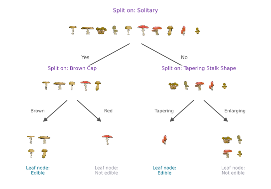
The printed trace and the picture tell the same story. The root splits on Solitary. Its left branch (the solitary mushrooms) splits on Brown Cap, giving a leaf of four edible brown-capped mushrooms and a leaf holding the single red poisonous one. The right branch (the non-solitary mushrooms) splits on Tapering Stalk Shape, isolating the one edible tapering mushroom from four poisonous ones. Every leaf ends up completely pure, so the depth-2 stopping criterion and the purity criterion happen to agree here, and the tree classifies the entire training set correctly.
That completes the decision tree practice lab, and with it, the course notes on Advanced Learning Algorithms.
Review Questions
1. The entropy at the root node printed exactly 1.0. Why was that predictable without any computation?
TipAnswer
The dataset has 5 edible and 5 poisonous mushrooms, so \(p_1 = 5/10 = 0.5\), and the entropy curve reaches its maximum value of exactly 1 at a 50-50 mix, the most impure a node can be.
1. In compute_entropy, why are the checks len(y) != 0 and p1 != 0 and p1 != 1 needed?
TipAnswer
An empty node would divide by zero when computing \(p_1\), so it returns 0 by convention. And when \(p_1\) is 0 or 1, the formula would evaluate \(\log_2(0)\), which is undefined; the convention \(0\log_2(0) = 0\) makes a completely pure node correctly score entropy 0, so those cases return 0 directly.
1. At the root, the gains were about 0.03 (brown cap), 0.12 (tapering), and 0.28 (solitary). After splitting on solitary, the left branch chose brown cap with a gain of about 0.72, far higher than any root gain. How can a feature be worth so much more one level down?
TipAnswer
Information gain is always relative to the examples at that node. At the root, brown cap splits all 10 mushrooms only slightly unevenly. But among just the five solitary mushrooms, cap color separates them perfectly, four brown edibles versus one red poisonous, a completely pure split. This is why the algorithm re-evaluates every feature at every node instead of ranking features once globally.
1. The tree stopped at depth 2 because of the maximum depth criterion. Would it have stopped there anyway?
TipAnswer
Yes. All four leaves came out completely pure, all edible or all poisonous, so the “node is 100 percent a single class” stopping criterion would have fired at exactly the same points even without a depth limit. In general the two criteria do not have to agree; here they happen to.